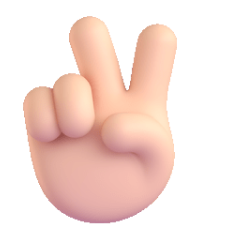
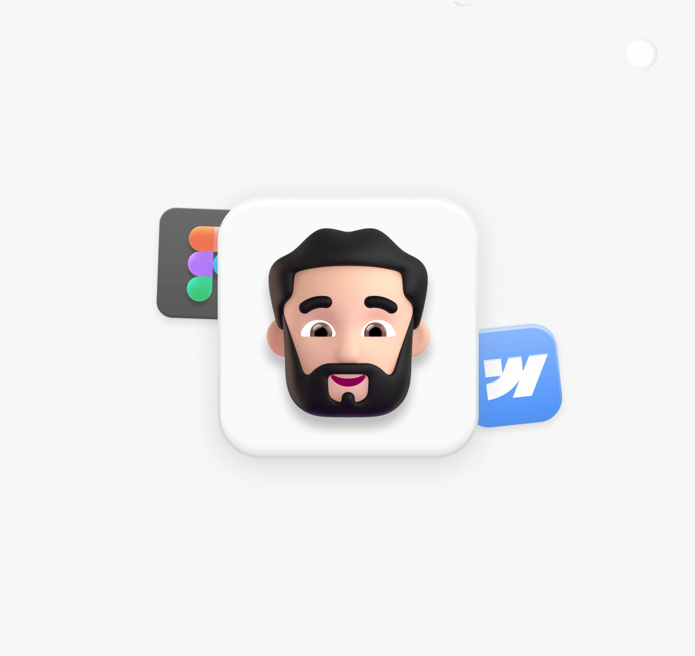

Hi, I’m Rasidul Islam
I’m a Product-focused Designer & Developer passionate about turning ideas and business challenges into meaningful digital products. I combine UI/UX, visual design, branding, and modern development to create experiences that are both engaging and built to solve real problems.
About me
I’m Rasidul Islam, a Product-focused Designer & Developer who enjoys turning ideas, business challenges, and complex requirements into simple and meaningful digital experiences.
My work brings together UI/UX design, visual design, branding, and modern development. I care about more than how a product looks—I think about how it works, how people experience it, and how design can create real value for a business.
I also enjoy bringing my designs to life through frontend and full-stack development, using modern tools and AI-powered workflows to move from concept to functional product faster.

My story
My journey started in 2021 with graphic design. I began by creating brand visuals, social media content, book covers, and marketing materials, which helped me build a strong foundation in visual communication and design principles.
As I gained experience, my curiosity moved beyond individual graphics. I wanted to understand how people interact with digital products, why certain interfaces feel intuitive, and how design can solve real problems. That led me deeper into UI/UX and product design.
Over time, I expanded my skill set into frontend, backend, and full-stack development. Today, I combine both sides of my skill set to design experiences and turn those ideas into working digital products—from websites and SaaS platforms to business tools and automation solutions.
For me, the goal has always been simple: design with purpose, build with intention, and create products that genuinely help people.
My skills
I bring together design, product thinking, and development to create digital experiences that are both visually engaging and genuinely useful.
My career
A journey from visual design to product-focused design and development, shaped by hands-on experience across branding, UI/UX, digital products, and creative technology.
Experience
Selected roles and commercial design experience across SaaS products, agencies, and global clients.
CodeMoly
Leading design for CodeMoly's SaaS products — from Bebshadar (POS + inventory), which hit 1,000+ installs in its first 15 days, to MolyEcom and MolyLearn. Along the way, I picked up front-end and back-end development to push products further than design alone.
Selected work: MolyEcom · Bebshadar · MolyLearn · Freito · MolyFlow
CreatiX-IT
Rebuilt a company's entire brand identity and website — brand recognition up 30%, traffic up 15%. Proof that good design isn't decoration, it moves numbers.
Eporibar
Created social media posts, Facebook cover banners, and marketing designs for e-commerce campaigns, maintaining consistent brand presentation across digital channels.
Freelancer.com
Delivered branding and design work for clients across industries worldwide, winning multiple top-rated contests along the way.
SwiftWebx
Where it all started — creating logos, book covers, branding materials, and digital assets that built a strong foundation in visual communication and commercial design principles.
Education
The technical foundation behind how I think about problems — even if my career ended up somewhere I didn't expect.